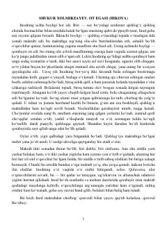

OEInod ismli o'qituvchining o'z vafodor oti uchun olib borgan kurashi haqidagi hikoya.
Hikoyada Inod ismli o'qituvchining hayoti va uning sevimli qorabayir oti bilan bog'liq kechinmalari tasvirlanadi. Qishloq hayoti, inson va hayvon o'rtasidagi sadoqat hamda davr qiyinchiliklari fonida muallifning o'z otini saqlab qolish uchun olib borgan kurashi hikoya qilinadi.